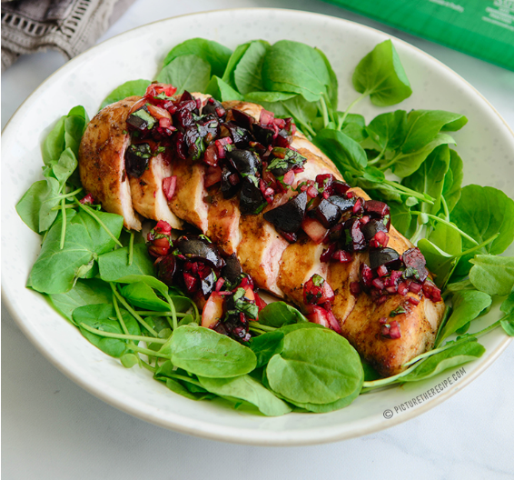
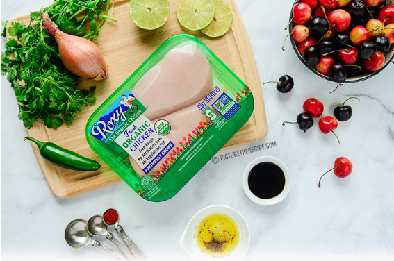
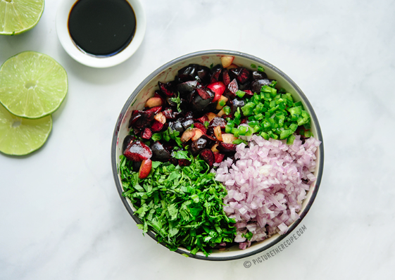

GRILLED CHICKEN WITH FRESH CHERRY SALSA
INGREDIENTS
- 2 Chicken Breasts
- 1 Tbsp Olive Oil
- 1 tsp Salt (or to taste)
- 1/4 tsp pepper (or to taste)
- 1 tsp Chipotle Powder
- 2 cups sweet cherries pitted & chopped
- 1/2 medium jalapeno seeded, and ribs removed
- 1/4 cup shallot, finely diced
- 1/4 cup cilantro leaves chopped
- 1 tbsp balsamic vinegar
- Juice of 1 lime
- Salt and pepper to taste
DIRECTIONS
- Combine the ground lamb, onion, garlic, parsley, fennel seed, coriander powder, cumin powder, crushed red pepper, rice flour, egg, salt and pepper together well.
- Mix with your hands if needed.
- Form about 20 palm sized meatballs rolling them in your hands.
- Place on a parchment lined baking tray and allow to set for about 10 mins in the fridge while you preheat the oven to 450F.
- Bake the meatballs at 450F for about 15-20 mins.
- While the meatballs are cooking, mince/grate 1-2 cloves of garlic into the Greek yogurt.
- Season with salt and stir well.
- Slice the radishes & cucumbers into half-moons and season them with salt.
- To plate spoon some of the garlic yogurt on the bottom of the pate, top with meatballs...garnish with sliced radishes & cucumbers and top with mint chimichurri sauce.
PHOTOS


